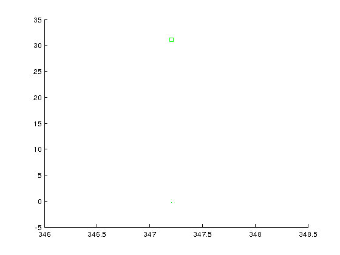

WiNetSim
Wireless Network Simulator \n
Copyright (C) 2016 IIT Hyderabad \n
This program is free software: you can redistribute it and/or modify
it under the terms of the GNU General Public License as published by
the Free Software Foundation, either version 3 of the License, or (at
your option) any later version.
This program is distributed in the hope that it will be useful, but
WITHOUT ANY WARRANTY; without even the implied warranty of
MERCHANTABILITY or FITNESS FOR A PARTICULAR PURPOSE. See the GNU
General Public License for more details.
You should have received a copy of the GNU General Public License
along with this program. If not, see <http://www.gnu.org/licenses/>.
Contact Information
WiNetSim Admin : sreekanth@iith.ac.in
Address : comm-lab, IIT Hyderabad
for i=1:NCell
for j=1:n_AP
AP_obj{1,i}(j) = AP_11ac(j,WiFi_AP{i}(j,:),n_STA,parameter,graph);
for k=1:n_STA
STA_obj{i,j}(k) = STA_11ac(k,WiFi_STA{i,j}(k,:),AP_obj{1,i}(j),parameter,graph);
end
AP_obj{1,i}(j).ADD_UE(STA_obj{i,j});
end
end
for i=1:NCell
for j=1:n_AP
for k=1:NCell
if(k==i)
te = 1:n_AP;
te(te==j)=[];
else
te = 1:n_AP;
end
AP_obj{1,i}(j).listen_to(AP_obj{1,k}(te));
for l=1:n_AP
AP_obj{1,i}(j).listen_to(STA_obj{k,l});
end
end
end
end
for i=1:NCell
for j=1:n_AP
for k=1:n_STA
for l=1:NCell
STA_obj{i,j}(k).listen_to(AP_obj{1,l});
end
for l=1:NCell
for m=1:n_AP
if(l==i&&m==j)
te = 1:n_STA;
te(te==k)=[];
else
te = 1:n_STA;
end
STA_obj{i,j}(k).listen_to(STA_obj{l,m}(te));
end
end
end
end
end
Error using patch
Value must be finite and greater than zero
Error in specgraph.scattergroup/refresh (line 169)
p = patch('Parent',double(this),...
Error in specgraph.scattergroup/schema>LdoDirtyAction
(line 145)
refresh(h);
Warning: Error occurred while evaluating listener
callback.
